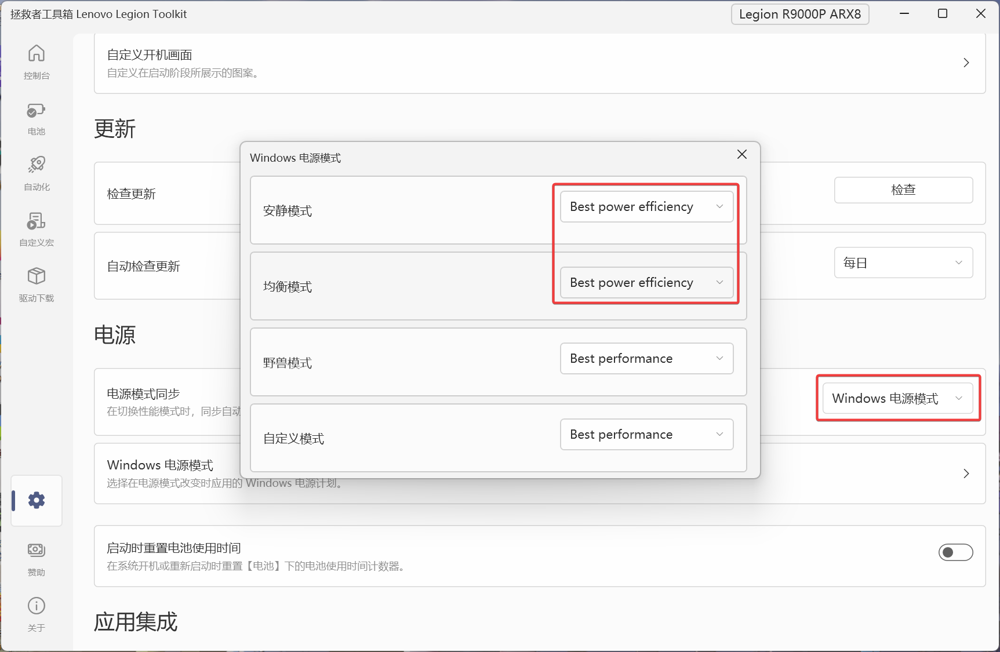
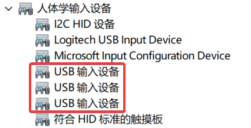

关于联想拯救者R9000P的若干问题的解决方法
我现在用的电脑是2023年换的R9000P（之前用的是Y7000P）。拯救者的性能一直很好，特别是这代CPU用是AMD的R9-7945HX，16核32线程，多核性能非常强。GPU是RTX4060，显存虽然只有8G，但在关掉独显直连之后还是能够勉强在本地运行一些小模型的。
不过，拯救者的小毛病一直也比较多。
1. 调度问题
拯救者的默认调度策略有一些问题，加上这颗CPU待机功耗本身就比较高，导致在默认的均衡模式下，即使什么也不做，温度也会冲到75℃ 左右，打开个网页随随便便就能到90℃ 以上。
这个机子刚发布的时候，网上一票教人如何修改配置、压低CPU功耗的视频，可见其问题的严重性。我开始的时候也试了很多，对于打游戏这种GPU重负载的情况确实实用，能够有效减少CPU和GPU抢功率的问题。但是对于日常的温控和噪音问题，还是无法解决。
最终我找到的解决方法是控制CPU的睿频。由于Windows默认对CPU进行睿频，导致即使什么也没干，也会有一部分内核的频率跑到5.4GHz，即使是低频的内核也有2.4GHz，CPU的待机功耗在50W左右。这个CPU本来就有积热严重的问题，这种情况下温度始终降不下来，因而风扇的速度也就降不下来，所以显得特别吵。
而一旦关掉睿频，内核的最大频率会降到3.7GHz~4.4GHz，低频降到1.8GHz，CPU的待机功耗降到30W以下，待机温度降到60℃，此时风扇还在运转，但是明显安静多了，不至于那么尖锐。
关掉睿频的方法有很多。我使用的是Lenovo Legion Toolkit：
- 在设置中将「电源模式同步」改为「Windows电源模式」；
- 然后在下一行的「Windows电源模式」的选项中，将「安静模式」和「均衡模式」的电源模式设为「Best power efficiency」，将「野兽模式」和「自定义模式」的电源模式设为「Best performance」。

这应该相当于是在Legion Zone的自定义模式里的「安静电源计划」（？）
由于Legion Zone在加入游戏中心之后我就没再用过，现在记不太清了。
这样，在「安静模式」和「均衡模式」下，CPU不会进行睿频，温度和噪音就控制住了。
而且这种模式的温度墙应该是85℃，超过之后自动降频，能够缓解一些CPU的积热。
而如果需要完全的性能释放的时候，则可以选择「野兽模式」或「自定义模式」，这时CPU会放开睿频，温度墙则是100℃。
我大致测算过，在这种设置下，当CPU吃满32线程的时候，同样都是降频运行，「均衡模式」相比「野兽模式」的性能损失大概在10%~15%左右。
2. 混合模式鼠标卡顿
R9000P的显卡默认是混合模式，我好多次遇到移动鼠标的时候突然卡一下的问题，找了很久也没有什么解决办法。最终还是直接切换到独显直连模式了事。
毕竟R9000P配的610M显卡实在是太弱鸡了，就给了2CU。
可惜的是，R9000P不像Y9000P一样可以热切换独显直连，每次切换都得重启。
特别是我换了64G内存之后，每次切换显卡显示模式都要进行显存分配（？），启动会特别慢，第一次的时候我甚至以为是死机了。因此，我平时就一直使用独显直连了。毕竟我基本不需要断电使用笔记本，也就不需要考虑续航的问题。
3. 掉驱动（蓝牙、音频）
拯救者一个通病是偶尔会掉驱动，我遇到的有情况包括：
- 蓝牙突然连不上（此时点击右下角电源按钮会发现蓝牙选项消失了，如果打开设置的话会非常卡）
- 音频突然无法播放（一个典型的例子就是网页播放视频的时候，暂停之后过一会儿在播放就播放不了，显示网络卡顿，但实际上网络并没有问题）
此时大概率是掉驱动了。
最简单的方法当然就是重启，重启之后基本上就正常了。
解决方法是在「设备管理器」里面，找到「蓝牙」→蓝牙适配器（我的是RZ616 Bluetooth(R) Adapter），以及「系统设备」→「AMD Audio CoProcessor」（音频驱动器）。
然后打开它们的「属性」，选择「电源管理」选项卡，然后把「允许计算机关闭此设备以节约电源」前面的复选框取消掉（默认是选中的）。
这样设置之后，我就目前还没再遇到类似的问题。
4. 键盘失灵
我还曾两次次遇到键盘失灵的情况，除了「Fn」组合键以外，其它键都用不了。最开始我以为是键盘坏了，后来发现是静电的问题。
释放静电的方法也很简单。拔掉电源，长按开机按钮，当屏幕出现Lenovo图标的时候，不要松手继续按住，一会儿屏幕就熄灭了。这样长按约15秒左右就可以了。静置一会儿再开机，键盘就可以正常使用了。
5. USB接口失灵
我之前遇到了后侧带关机充电的USB-A接口无法使用的问题，搜了一下网上好多说是主板烧了。由于R9000P的A口够多（左侧1个+右侧1个+后侧2个），还有2个C口，我就没有修。（网上有反馈修了之后还会再坏。）
后来有一次，我发现这个接口又能使用了，因此猜测大概率和上面的键盘失灵一样，都是静电的问题。释放了静电就没事了。
另外，可以把「设备管理器」里的「人体学输入设备」→「USB输入设备」，也像前面的蓝牙设置一样，关闭「允许计算机关闭此设备以节约电源」。我不知道这是否是必要的，但是保险起见，还是改了一下。

6. 总结
用了5年的拯救者，从Y7000P用到R9000P，整体来说我对它还是满意的。不过自己用没问题，推荐给别人的话还是要小心一些，各种小毛病还是太多了。
不过，追求性能释放和追求稳定性本来二者就不可兼得，总要做出选择。
另外，冰魄白的拯救者是真好看，完全不像以前一样傻大黑粗。